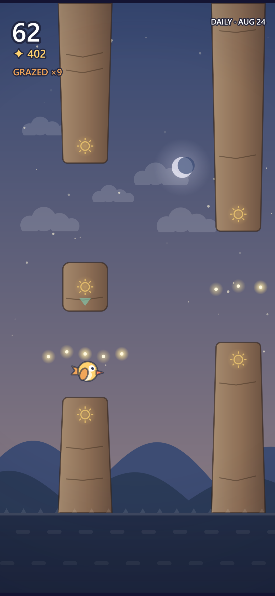
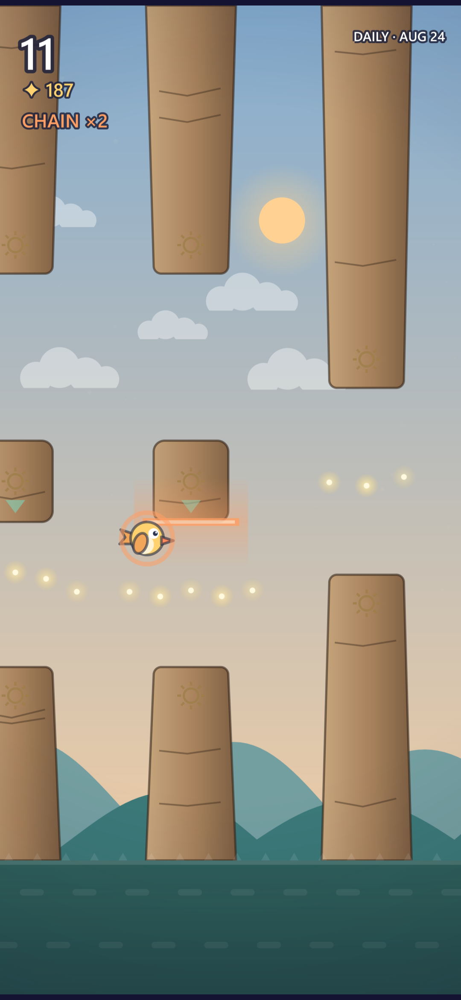
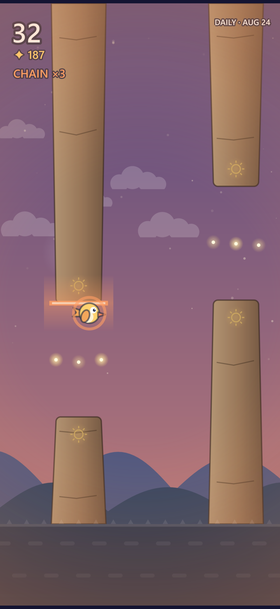

Sunbird is a game about one decision, made over and over, faster than you can think about it.
Tap to fly. Thread the gaps in the standing stones. That is the whole control scheme, and it takes about four seconds to learn.




What makes a flight
Shave the stone
Pass close enough to graze and you earn fireflies. Pass closer and earn more. String grazes together and the multiplier climbs, up to five — until one clean, safe pass breaks the chain. Your score never changes; only your nerve pays.
Two ways through
Some stones open twice. Take the high road and you pass safely with nothing to show for it. Drop into the low passage — tighter, closer to the ground, where the fireflies are — and you have to climb back out.
A whole day in one flight
The sky turns as you go: daylight, dusk, night, dawn. It goes dark on the hundredth stone and comes back around at two hundred. Almost nobody flies a full cycle. That is the point of it.
The same course for everyone
There is one course a day, identical for every player in the world — same stones, same fireflies, same choices, generated to land in exactly the same place on every phone.
Share the highlights
When a flight ends, the game cuts the moments worth watching into a short vertical clip you can post anywhere. It carries the course code, so whoever sees it can fly the exact same stones.
Earn your feathers
Nothing is for sale. Every bird is unlocked by a single flight that did the thing — forty stones, eighty fireflies, a whole day — and the trail behind you grows as you go.
The small print, up front
- No forced ads. An optional video to revive; a one-time purchase removes the banner and ad breaks for good.
- Plays fully offline.
- No account, no login, no data collected by us. See the privacy policy.
Who makes it
Tridesetri doo BeogradNarodnih heroja 43, 11070 Novi Beograd, Serbia
Registration number 21720682 · PIB 112694162
office@tridesetri.com